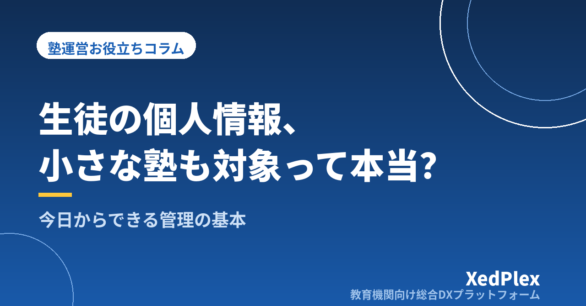

塾が守るべき生徒の個人情報管理の基本｜個人塾も対象になる法律と今日からできる対策

生徒の名前と学校名、保護者の電話番号、テストの点数、そして「ご家庭の事情」──塾の仕事は、子どもの個人情報を預かることと切り離せません。ところが個人塾・小規模塾の塾長と話すと、「正直、個人情報の管理までは手が回っていない」「うちみたいな小さな塾は、あの法律の対象外だと思っていた」という声を少なからず耳にします。
結論から言えば、生徒が1人でもいる塾は個人情報保護法の対象です。しかも塾が扱うのは「子どもの成績や家庭環境」という、扱いを間違えたときのダメージが特に大きい情報です。この記事では、難しい法律論ではなく、個人塾の実務目線で「最低限これだけは」という管理の基本を整理します。特別な費用はかからないものがほとんどなので、今日から手を付けられます。
「小さな塾だから関係ない」は通用しない
かつての個人情報保護法には「取り扱う個人情報が5,000人分以下の小規模事業者は対象外」という線引きがありましたが、2017年の改正法施行でこの線引きは撤廃されました。現在は、事業として個人情報を扱っていれば、個人経営の塾も、生徒10名の教室も、法律上は「個人情報取扱事業者」です。学習塾業界には、公益社団法人全国学習塾協会がまとめた「個人情報保護に関する学習塾におけるガイドライン」もあり、塾は個人情報をきちんと扱うべき業種として明確に位置づけられています。
まず、自塾がどれだけの個人情報を預かっているかを棚卸ししてみましょう。書き出してみると、想像以上に多いことに気づくはずです。
| 分類 | 塾が日常的に扱う情報の例 |
|---|---|
| 基本情報 | 生徒・保護者の氏名、住所、電話番号、メールアドレス、学校名、学年、顔写真 |
| 学習情報 | 塾内テスト・学校の成績、模試の判定、指導記録、出欠・入退室の記録 |
| 家庭の情報 | 面談で聞いた家庭の事情、きょうだいの在籍、健康面の配慮事項 |
| お金の情報 | 月謝の請求・入金記録、口座振替のための口座情報、未納の履歴 |
とくに成績や家庭の事情は、漏れたときに子ども本人が傷つく情報です。「個人情報の管理=法律対応」ではなく、生徒と保護者からの信頼を守る仕事の一部と捉えるのが出発点です。
押さえておきたい基本ルールは「集める・使う・守る・渡す」の4つ
個人情報保護法が求めることを塾の実務に置き換えると、次の4つに整理できます。
1. 集めるとき：何に使うかを伝える
個人情報を集めるときは、利用目的を特定して本人（保護者）に伝えることが求められます。実務上は、入塾申込書に利用目的を明記しておくのがいちばん確実です。「授業・指導、連絡、請求、緊急時の対応のために利用します」といった一文と、同意のチェック欄や署名欄を設けておきましょう。
2. 使うとき：伝えた目的の範囲で使う
集めた情報は、伝えた目的の範囲でしか使えません。塾で注意したいのは「良かれと思って」の場面です。たとえば合格実績として生徒の氏名や顔写真を教室掲示やチラシ、SNSに載せるのは、指導や連絡という当初の目的を超えた利用にあたります。掲載の可否は入塾時または掲載時に、書面で個別に同意を取るのが安全です。「名前は出さず『○○中学 1名』とだけ書く」といった匿名化も有効です。
3. 守るとき：漏らさない・なくさない仕組みを作る
法律は「安全管理措置」、つまり漏えいや紛失を防ぐ具体的な手立てを求めています。何をすればよいかは後半で詳しく扱います。
4. 渡すとき：本人の同意なく第三者に渡さない
生徒の情報は、原則として保護者の同意なく塾の外に出せません。「同じ学校のお母さんから連絡先を聞かれた」「卒塾生の進学先を聞かれた」といった何気ない場面も、勝手に答えれば第三者提供になり得ます。「本人の同意がない限り教えない」を塾の統一ルールにしておくと、講師も迷いません。
個人塾で起きやすい「ヒヤリ」の場面と対策
大きな事件でなくても、個人情報の事故は日常の中で起きます。塾で実際に起きやすいのは次のような場面です。
| 起きやすい場面 | 何がまずいか | 対策 |
|---|---|---|
| 一斉メールをTo/CCで送る | 全保護者にアドレスが見える | 一斉送信は必ずBCCに。可能なら一斉配信の仕組みに移行 |
| 講師の個人スマホに保護者の連絡先 | 退職後も情報が残る・私的利用を止められない | 連絡は塾の窓口に一本化し、個人の端末に残さない |
| 名簿・成績表を机に置いたまま面談や授業へ | 他の生徒・保護者の目に入る | 紙は使ったら即しまう。「机上に個人情報を残さない」を習慣に |
| USBメモリやノートPCの持ち帰り | 紛失すれば全生徒分が一度に漏れる | 持ち出しをやめるか、パスワード保護を必須にする |
| 名簿エクセルのコピーが講師ごとに増殖 | どこに何があるか誰も把握できない | 原本を1つに決め、コピー配布をやめる |
| 古い答案・名簿をそのままゴミへ | 廃棄物からの漏えい | 個人情報が載った紙はシュレッダーにかけてから捨てる |
講師の個人LINEで保護者とやり取りする運用のリスクについては、「塾の保護者連絡、講師の個人LINE頼みは危険？」で詳しく書いたとおりです。また、名簿エクセルのコピーが増えて管理しきれなくなる問題は、エクセル管理の限界サインの典型例でもあります。
お金をかけずに今日からできる安全管理措置
「安全管理措置」と聞くと大がかりに感じますが、小規模事業者に求められているのは、規模に見合った現実的な対策です。次の4つの観点で、できることから始めましょう。
ルールを決める（組織的な対策）
- 個人情報の責任者を決める。個人塾なら塾長本人で構いません。
- 「個人情報が載った書類・データの扱い方」をA4で1枚にまとめ、教室に備え付ける。
- 誰がどの情報にアクセスできるかを決める。アルバイト講師に請求・口座情報まで見せる必要は、通常ありません。
人に伝える（人的な対策）
- 講師を雇うときに、秘密保持の誓約書（在職中・退職後に知り得た生徒情報を口外しない）を交わす。
- 年度初めなどに、上の「ヒヤリの場面」を講師と共有する。事故の多くは悪意ではなく、うっかりから起きます。
モノを守る（物理的な対策）
- 申込書・成績表などの紙は、鍵のかかる引き出しや棚に保管する。
- 教室のPCは離席時にロックし、画面が保護者側から見えない向きに置く。
- 不要になった書類はシュレッダー処理を徹底する。
データを守る（技術的な対策）
- PCやクラウドサービスのパスワードを使い回さない。講師全員で1つのIDを共有する運用はやめ、1人1アカウントにする。
- 使えるサービスでは二段階認証を有効にする。
- 退塾した生徒のデータは「卒塾後○年で削除する」と保管期間を決め、期限が来たら消す。
個人情報の事故は、情報が「あちこちにある」ほど起きやすくなります。紙の名簿、講師のスマホ、複数のエクセルコピー──と分散した状態を、「原本はここだけ」と一か所に集約するだけで、守るべき対象が絞られ、管理は一気に楽になります。
もし漏えいが起きてしまったら
どれだけ気をつけていても、事故の可能性はゼロにはなりません。2022年施行の改正法では、漏えいの内容によっては（不正アクセスによるもの、クレジットカード情報など財産的被害のおそれがあるもの、1,000人を超える大規模なものなど）、個人情報保護委員会への報告と本人への通知が義務になりました。小さな塾でも無関係ではありません。
万一のときの初動は次の順番です。
- 事実確認と被害の拡大防止：何が・誰の分・どこまで漏れたのかを確認し、原因を止める（誤送信ならすぐ削除依頼、アカウント不正ならパスワード変更）。
- 影響を受ける保護者への連絡：分かっている事実と対応を、隠さず正直に伝える。
- 必要に応じて公的な報告：報告義務に当たるかは個人情報保護委員会のサイトで確認できます。判断に迷う場合は自治体の相談窓口や専門家に相談を。
- 再発防止策の実行：原因になった運用（To送信、コピーの放置など)を仕組みごと変える。
いちばん信頼を失うのは、漏えいそのものより「気づいていたのに黙っていた」ことです。誠実な初動こそ最大の信頼回復策になります。
まとめ：個人情報管理は「選ばれる塾」の土台になる
生徒の個人情報管理は、罰則を避けるための面倒な義務ではなく、「この塾なら子どもを任せられる」という信頼の土台です。今日からできることを整理すると、①入塾申込書に利用目的と同意欄を入れる、②「ヒヤリの場面」を講師と共有する、③紙とデータの置き場所を減らして一か所に集約する、④退塾生データの保管期間を決める──の4つです。
そして中長期的には、名簿・出欠・成績・請求・保護者連絡が別々のファイルやアプリに散らばった状態を解消し、アカウント管理された一つの仕組みに集約していくことが、いちばん確実な安全管理措置になります。仕組みを選ぶ際の考え方は「小規模塾のためのシステム選び5つの基準」で詳しく解説していますので、あわせてご覧ください。
この記事を書いた運営より
私たちは、個人経営・小規模の学習塾向けに、生徒管理・QRコードでの入退室記録・月次請求・保護者へのLINE/メール通知・AIによる学習支援までをひとつにまとめた教育機関向け総合DXプラットフォーム「XedPlex（ゼドプレックス）」を開発・提供しています。初期費用は0円、料金は生徒1名あたり月額300円（税込）から。生徒50名の塾なら月15,000円（税込）です。全国8つの教室で導入されており、導入塾には紹介ホームページの無料作成も行っています。機能の詳細説明はこちら。
XedPlexの詳細を見る